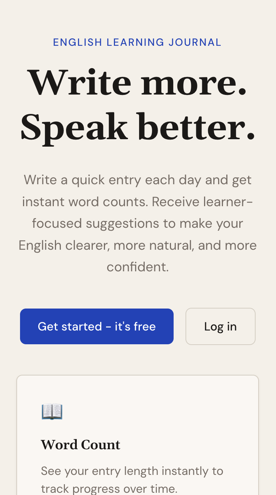
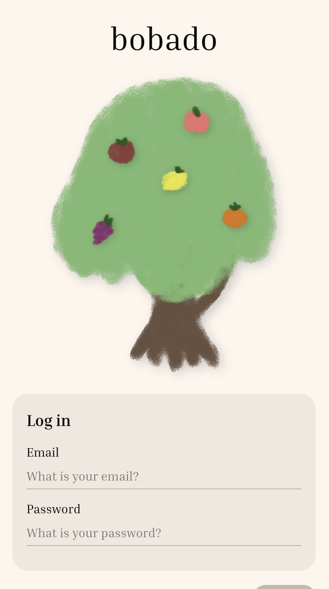
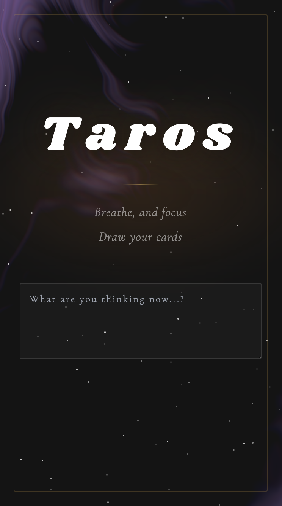
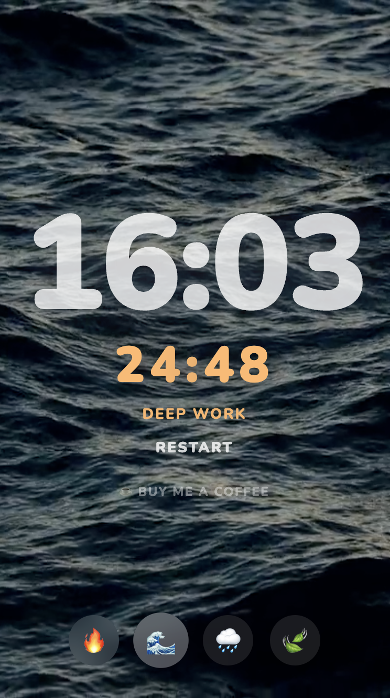
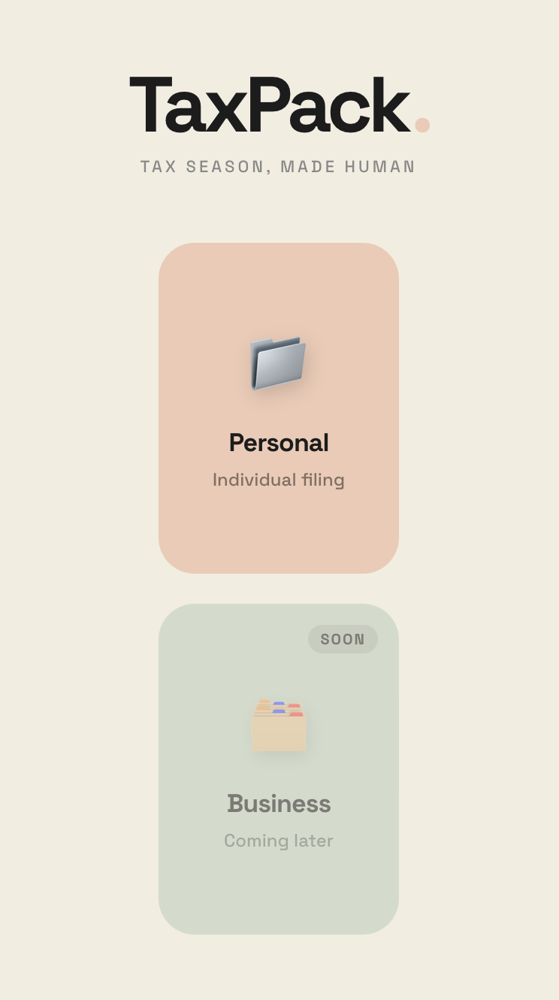

This girl always dreamed travelling and living abroad. She grew up to
became an interior designer in Australia, living apart from her family
for a decade she never thought possible. Now she's imagining again.
This time, as a software developer. She used to design for people
affecting their lives through something as simple as color, or as
practical as the distance from point A to point B. Now she designs
virtually, the same intention, but less specific and wider reach.
Do you want to hear more about her?

I built Wrdlift for myself. After a decade of speaking English, progress slows once you can communicate clearly. It sits in your journal and points out spots where you could say things differently.
a smart to-do app where your tasks grow as fruits on a tree. Type in natural language, let AI categorize your day, and pluck the fruits when done.


an AI-powered tarot reading app that talks with you rather than at you. It asks follow-up questions, listens to your answers, and gives you a reading that fits your situation.
Minimal Pomodoro timer with ambient video backgrounds.


Drop PDFs into labeled folders and export a structured ZIP for your accountant. No backend, no accounts - runs entirely client-side.